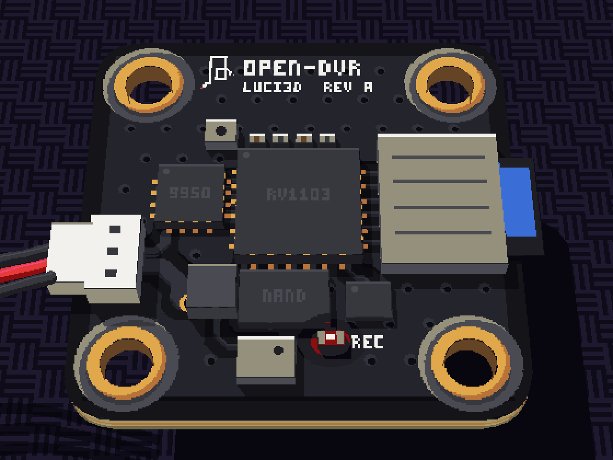

Built for analog FPV.
We repair, reverse-engineer and build FPV electronics, and we'd rather fix a board than bin it. Our recorder, open-dvr, is open source and moving onto our own hardware.
open-dvr
Most cheap analog DVRs throw away half your frames. open-dvr records every field your camera sends, so 50 and 60 fps footage really is 50 and 60 fps.
- PAL 960 x 576 at 50 fps, NTSC 960 x 480 at 59.94 fps
- On-board microphone, in sync with the video
- Clips that survive a power cut
- microSD cards up to 512 GB

The DIY kit
Our first hardware: a decoder board that turns a Luckfox Pico into an open-dvr recorder. Built and tested in small batches.
Inside the circuit
To us, every board is a city. Traces are roads, chips are buildings, and old boards carry their scars: scorch marks, flux, bodge wires. luci3D, the snake from the back of our boards, lives in the traces. We're building a game in that world.
While it's in the works, route a trace through one of the hand-drawn mazes from the original luci3D zine.